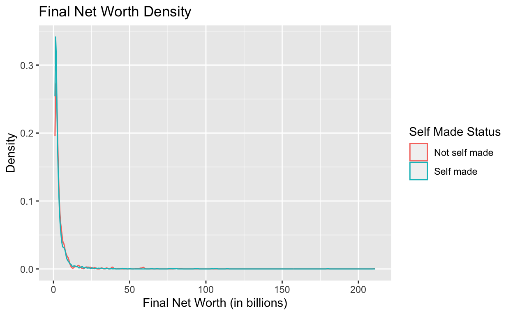

Is there a relationship between self made and non self made status and the final net worth of billionaires?
My research question will be: is there a correlation between self made status and final net worth? My variables of interest are whether an individual is self made or if they have inherited wealth/non self made, and their final net worth. My hypothesis is that non self made billionaires (inherited wealth) are more likely to have higher net worths as they were passed down generational wealth, allowing their net worths to be accumulate more over time. The variation is the difference in status of self made or not self made/inherited wealth. For the purposes of this study, billionaires who inherited wealth will be called “not self made”.
An observed pattern in the data that would provide support for my hypothesis would be that non self-made billionaires would have a higher net worth as they have generational wealth that allowed their net worths to accrue over time. I expect that self-made billionaires, although very hard working and entrepreneurial, wouldn’t have been able to accrue as large as a net worth compared to non self-made billionaires as they didn’t have generational wealth passed down. My unit of analysis is a billionaire. The explanatory variable of interest is the status of the billionaires, whether they are self made or not self made. The variable is coded =1 for self-made and =0 for not self-made/inherited wealth. My outcome variable is the final net worth of the billionaire. For instance, if the variable were coded =211.0, it would mean that the final net worth of that individual is 211 billion or 211,000,000,000.
This variable is measured from data from Kaggle (https://www.kaggle.com/datasets/nelgiriyewithana/billionaires-statistics-dataset) from 2023 which contains statistics on the world’s billionaires and other information such as category, name, age, location, gender, and more. If I observe a greater net worth in non self-made billionaires, this would support my hypothesis. If, on the other hand, I observe a greater net worth for self-made billionaires, this would provide evidence against my hypothesis. When I run my regression of the final net worth on the self-made status variable, a positive, significant coefficient would indicate support for my hypothesis.
The names and descriptions of relevant variables are below.
| Name | Description |
|---|---|
rank |
The ranking of the billionaire in terms of wealth. |
finalWorth |
The final net worth of the billionaire in U.S. dollars. |
category |
The category or industry in which the billionaire’s business operates. |
personName |
The full name of the billionaire. |
selfMade |
1 if self-made and 0 if non self-made |
status |
“D” represents self-made billionaires (Founders/Entrepreneurs) and “U” indicates inherited or unearned wealth. |
gender |
The gender of the billionaire. |
cpi_country |
Consumer Price Index (CPI) for the billionaire’s country. |
cpi_change_country |
CPI change for the billionaire’s country. |
gdp_country |
Gross Domestic Product (GDP) for the billionaire’s country. |
gross_tertiary_education_enrollment |
Enrollment in tertiary education in the billionaire’s country. |
gross_primary_education_enrollment_country |
Enrollment in primary education in the billionaire’s country. |
tax_revenue_country_country |
Tax revenue in the billionaire’s country. |
total_tax_rate_country |
Total tax rate in the billionaire’s country. |
population_country |
Population of the billionaire’s country. |
library(readr)
library(ggplot2)
library(tidyverse)
library(dplyr)
# Loading data into a tibble named billionaires
billionaires <- read_csv("~/Desktop/Billionaires Statistics Dataset.csv", show_col_types = FALSE)
# Converting the `selfMade` variable into binary to be utilized more efficiently
billionaires$selfMade <- as.integer(as.logical(billionaires$selfMade))
# Mutating the `finalWorth` variable to be divided by 1000 so it can be read easily
billionaires <- billionaires |>
mutate(finalWorth = finalWorth / 1000)
billionaires# A tibble: 2,640 × 35
rank finalWorth category personName age country city source
<dbl> <dbl> <chr> <chr> <dbl> <chr> <chr> <chr>
1 1 211 Fashion & R… Bernard A… 74 France Paris LVMH
2 2 180 Automotive Elon Musk 51 United… Aust… Tesla…
3 3 114 Technology Jeff Bezos 59 United… Medi… Amazon
4 4 107 Technology Larry Ell… 78 United… Lanai Oracle
5 5 106 Finance & I… Warren Bu… 92 United… Omaha Berks…
6 6 104 Technology Bill Gates 67 United… Medi… Micro…
7 7 94.5 Media & Ent… Michael B… 81 United… New … Bloom…
8 8 93 Telecom Carlos Sl… 83 Mexico Mexi… Telec…
9 9 83.4 Diversified Mukesh Am… 65 India Mumb… Diver…
10 10 80.7 Technology Steve Bal… 67 United… Hunt… Micro…
# ℹ 2,630 more rows
# ℹ 27 more variables: industries <chr>, countryOfCitizenship <chr>,
# organization <chr>, selfMade <int>, status <chr>, gender <chr>,
# birthDate <chr>, lastName <chr>, firstName <chr>, title <chr>,
# date <chr>, state <chr>, residenceStateRegion <chr>,
# birthYear <dbl>, birthMonth <dbl>, birthDay <dbl>,
# cpi_country <dbl>, cpi_change_country <dbl>, gdp_country <chr>, …My data source is from Kaggle (https://www.kaggle.com/datasets/nelgiriyewithana/billionaires-statistics-dataset). The data was compiled from public sources on the Internet. The key dependent variable of final net worth was measured from real billionaire net worths that are publicly available. The key independent variable of net worth status was also compiled from public information from the Internet. For my data, I named the tibble billionaires, and loaded the data into that. In regards to the self-made status, the original data displayed self made status as TRUE or FALSE. I wanted to change it to binary to show either 1 for self-made or 0 for not self-made, so I could set conditions for self_made that is Self made if selfMade is 1 and Not self made otherwise. Furthermore, I had to mutate finalWorth to be divided by 1000 so that I could describe the finalWorth as the number depicted in billions.
My research design is cross-sectional as I am simply comparing the net worths of self-made and non self-made billionaires using already compiled data.
# Creating a new variable called `self_made` based on a logical conditional if they are self made
billionaires <- billionaires |>
mutate(self_made = if_else(selfMade == 1, "Self made", "Not self made"))
# Plot visualizing main outcome of interest which is Final Net Worth
billionaires_scatter <- billionaires |>
ggplot(aes(x = finalWorth, color = self_made)) + geom_density() +
labs(
x = "Final Net Worth (in billions)",
y = "Density",
title = "Final Net Worth Density",
color = "Self Made Status")
billionaires_scatter
billionaires <- billionaires |>
mutate(self_made = if_else(selfMade == 1, "Self made", "Not self made"))
# Table showing mean and standard deviation between self made and non self made billionaires
worth_distribution <- billionaires |>
group_by(self_made) |>
summarize(sm_mean = mean(finalWorth, na.rm = TRUE), sm_sd = sd(finalWorth, na.rm = TRUE))
knitr::kable(worth_distribution, digits = 2, col.names = c("Self Made Status", "Final Net Worth Mean", "Final Net Worth Standard Deviation"))| Self Made Status | Final Net Worth Mean | Final Net Worth Standard Deviation |
|---|---|---|
| Not self made | 4.97 | 10.61 |
| Self made | 4.47 | 9.46 |
# Plot of main analysis of the final net worth between self made versus non self made individuals
worth_distribution_plot <- billionaires |>
ggplot(data = billionaires, mapping = aes(x = self_made, y = finalWorth, color = self_made)) + geom_boxplot() +
labs(x = "Self Made Status", y = "Final Net Worth (in billions)",
color = "Self Made Status")
worth_distribution_plot# Regression output with other variables to account for potential confounding variables
fit <- lm(formula = finalWorth ~ self_made + total_tax_rate_country + population_country + cpi_country + gross_tertiary_education_enrollment + gross_primary_education_enrollment_country, data = billionaires)
summary(fit)
Call:
lm(formula = finalWorth ~ self_made + total_tax_rate_country +
population_country + cpi_country + gross_tertiary_education_enrollment +
gross_primary_education_enrollment_country, data = billionaires)
Residuals:
Min 1Q Median 3Q Max
-5.602 -3.088 -2.145 -0.409 205.649
Coefficients:
Estimate Std. Error
(Intercept) 2.992e+00 5.328e+00
self_madeSelf made -6.116e-01 4.697e-01
total_tax_rate_country 1.747e-03 2.226e-02
population_country -2.826e-10 5.529e-10
cpi_country -6.593e-03 8.846e-03
gross_tertiary_education_enrollment 2.582e-02 1.306e-02
gross_primary_education_enrollment_country 1.272e-02 4.786e-02
t value Pr(>|t|)
(Intercept) 0.562 0.5745
self_madeSelf made -1.302 0.1930
total_tax_rate_country 0.078 0.9374
population_country -0.511 0.6094
cpi_country -0.745 0.4561
gross_tertiary_education_enrollment 1.977 0.0481 *
gross_primary_education_enrollment_country 0.266 0.7904
---
Signif. codes: 0 '***' 0.001 '**' 0.01 '*' 0.05 '.' 0.1 ' ' 1
Residual standard error: 10.1 on 2449 degrees of freedom
(184 observations deleted due to missingness)
Multiple R-squared: 0.005993, Adjusted R-squared: 0.003558
F-statistic: 2.461 on 6 and 2449 DF, p-value: 0.02244modelsummary::modelsummary(fit,
statistic = c("s.e. = {std.error}",
"p = {p.value}"),
gof_map = c("nobs", "r.squared", "adj.r.squared"))| (1) | |
|---|---|
| (Intercept) | 2.992 |
| s.e. = 5.328 | |
| p = 0.574 | |
| self_madeSelf made | −0.612 |
| s.e. = 0.470 | |
| p = 0.193 | |
| total_tax_rate_country | 0.002 |
| s.e. = 0.022 | |
| p = 0.937 | |
| population_country | 0.000 |
| s.e. = 0.000 | |
| p = 0.609 | |
| cpi_country | −0.007 |
| s.e. = 0.009 | |
| p = 0.456 | |
| gross_tertiary_education_enrollment | 0.026 |
| s.e. = 0.013 | |
| p = 0.048 | |
| gross_primary_education_enrollment_country | 0.013 |
| s.e. = 0.048 | |
| p = 0.790 | |
| Num.Obs. | 2456 |
| R2 | 0.006 |
| R2 Adj. | 0.004 |
In this analysis, using a table, the table illustrates the mean and standard deviation of the final net worth of self made and non self made individuals. The distribution table shows that on average, the average final net worth for non self made individuals is slightly higher than the average final net worth for self made individuals as the mean is 4.47 for self made and is 4.97 for non self made. Furthermore, the final net worth standard deviation for non self made individuals is higher than the final net worth standard deviation for self made individuals as the standard deviation is 9.46 for self made and 10.61 for non self made.
Furthermore, looking at worth_distribution_plot, the boxplot shows that there is a larger spread and a slightly higher median for self made billionaires, which is consistent with the table titled worth_distribution.
As for the regression, looking at fit, which shows the regression output, the self_made coefficient is -0.612, which indicates that self made billionaires saw a decrease in average final net worth of 0.612, compared to non self made billionaires. This is not statistically significant at the 0.05 level because the p-value is larger 0.193. We fail to reject the null hypothesis of no effect at the 0.05 level since the p-value is larger than 0.05.
These results infer that on average, non self made individuals do have a slightly higher net worth, but the results are not statistically significant enough to draw a large conclusion. There may be other confounding variables, as well, such as those with inherited wealth were given loans to start businesses or where able to take further risks to pursue businesses or other entrepreneurial pursuits. For this regression, I attempted to account for other confounding variables.
The regression titled fit also has other other control/independent variables such as total_tax_rate_country, population_country, cpi_country, gross_tertiary_education_enrollment, and gross_primary_education_enrollment_country which account for the country the billionaire resides in’s total tax rate, the population of their country, the Corruption Perceptions Index (CPI) of their country, Gross Tertiary Education Enrollment of their country, and the Gross Primary Education Enrollment of their country. The regression showed that the coefficient for total_tax_rate_country is 0.002, which indicates that the tax rate impacted final net worth on average by 0.002. The p-value is 0.937, which means we can fail to reject the null hypothesis of no effect at the 0.05 level since the p-value is larger than 0.05. For population_country, the coefficient is 0, which means that there is no effect on the billionaire’s country population on final net worth. For cpi_country, the coefficient is -0.007. This means that on average, a higher CPI is correlated with a lower final net worth of 0.007. The p-value is 0.456, which means we can fail to reject the null hypothesis of no effect at the 0.05 level since the p-value is greater. For gross_tertiary_education_enrollment, the coefficient is 0.026, which means that higher gross tertiary education enrollment is associated with an average increase on final net worth of 0.026. The p-value is 0.048 which means we can reject the null hypothesis of no effect at the 0.05 level since the p-value is smaller. For gross_primary_education_enrollment_country, the coefficient is 0.013, which means that a higher gross primary education enrollment rate is associated with an average increase on final net worth of 0.013. The p-value is 0.790, which means we can fail to reject the null hypothesis at the 0.05 level since the p-value is greater than 0.05.
Overall, it is clear that the regression is not signifiance to conclude that there is a relationship between self made status and final net worth. However, if anything, the results show a very slight correlation between individuals being non self made a slightly higher mean net worth. There are limitations to the analysis as there is a confounding variable of generational wealth playing a factor as wealth can be passed down through generations, allowing non self made individuals to have a higher net worth. All in all, it appears that the only confounding variable that may be plausible is gross_tertiary_education_enrollment as that is the only variable with a p-value that was not rejected at the 0.05 level. This makes sense as tertiary education refers to post-secondary education received, which may be correlated with a country’s wealth as they may have more skilled workers. Thus, this may impact final net worth as more individuals have the resources to potentially purchase from a billionaire’s company or contribute positively to the economy, which may have a cascading effect on final net worth. I could improve my analysis if I had more time or money by surveying the billionaires included on survey questions that would ask them to respond numerically on questions such as whether they believe self made status impacts final net worth, how much money they were loaned to by relatives, whether they received loans or not, etc. Furthermore, I could incorporate further variables of interest with more time to explain for other confounding variables.
Nidula Elgiriyewithana. “Billionaires Statistics Dataset (2023).” Kaggle, 29 Sept. 2023, www.kaggle.com/datasets/nelgiriyewithana/billionaires-statistics-dataset.